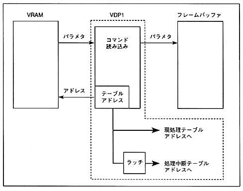

- When the frame buffer is switched, the value obtained by dividing the address of the command table that fetched parameters from VRAM into VDP1 by 8H is written to this register.
- This register is updated when the frame buffer is switched, so that the final processing command table address of the previous frame can be known.
- The command table address boundary is 20 HByte, so the lower 2 bits of the register are fixed at 00B.
Figure 4.3 Processing interruption and current processing table address
